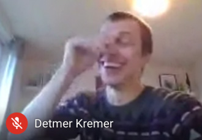
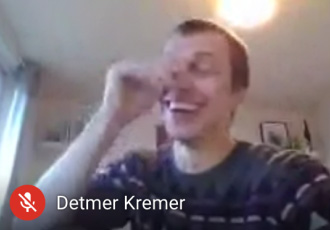
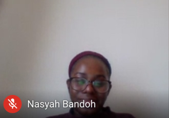
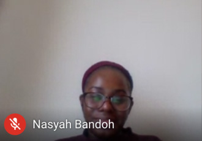

Problem
How do we create a unified design system (digital and print) that is both precise and human, but avoids charity sector tropes? An identity that sits alongside establishment organisations, but conveys the immediacy and contemporary problem solving of this organisation.
The brand has two expressions. This mark was to be used across print, digital stationery (powerpoint templates, email signatures)
The dynamic framing device that can be used to brand image and video content. Only use the frame if the image/video is at least 1200px wide and 600px deep. When the image is too small to use a frame, set the F and A marks full height.A guide has been added to the figma working files Application: social headers. Linkedin's header dimensions are too small to accomodate a photo, so it's best to use a card for 1128×191. Application: Open graph (link sharing) images. These can be added by the website developer. We shouldn't use black or white backgrounds for cards 200×200 / 600×315 / 1200×630 / 1200×675
When refreshing a brand, it's a good idea to audit very broadly the existing identity (and possible previous ones) and materials.
Tucked away within the browser tab lay a version of the organisation's logo that hadn't been used anywhere else. Favicons are such an interesting piece of graphic furniture. This 16x16 block has stayed the same since the early web. For small organisations, this little graphic is often an afterthought. This was the starting point for the updated brand.
Stationery
Stationery is a lovely word, with wonderful connotations if you're so inclined (I am). When brand designers include branded stationary in the 2020s, it seems remiss to depriorise how business is actually conducted in the internet age, in favour of things that might suit a mockup. Letters are still sent, but emails are how business is conducted.
Logo
Type
| Voice | Typeface | Usage | Alternative |
|---|---|---|---|
| Neutral voice | (Default) | IBM Plex Sans | Helvetica; Arial |
| Human voice | Messages; acknowledgements; quotes; poetry in impact studies | IBM Plex Serif | Georgia |
| Data | Technical data; graph labels; tabular data | IBM Plex Mono | Roboto Mono; Helvetica; Arial |
| Function | Typeface | Weight | Web | |
|---|---|---|---|---|
| Title | IBM Plex Sans | Light | 23pt / 33pt | 28px / 34px |
| Body copy (default) | IBM Plex Sans | Regular | 10pt / 14pt | 13px / 17px |
| Body copy (human) | IBM Plex Serif | Regular | 10pt / 14pt | 13px / 17px |
| Heading | IBM Plex Sans | Semi-bold | 14pt / 18pt | 22px / 28px |
| Subheading | IBM Plex Sans | Semi-bold | 10pt / 14pt | 16px / 22px |
| Inline CTA | IBM Plex Sans | Semi-bold | 10pt / 14pt | 16px / 22px |
| Small print | IBM Plex Sans | Regular | 7pt / 10pt | 10px / 14px |
| Data | IBM Plex Mono | Regular | 10pt / 14pt | 28px / 34px |
Social media
Social media may be the first touchpoint for many experiencing the brand. It's important to notice that these marks always sit alongside the organisation's full name. This means we can be a little more sparing or experimental about what we inclide in these marks.
M: 0
Y: 0
K: 0
M: 0
Y: 0
K: 0
M: 0
Y: 0
K: 0
M: 0
Y: 0
K: 0
M: 0
Y: 0
K: 0
M: 4
Y: 1
K: 0
M: 24
Y: 32
K: 0
M: 0
Y: 18
K: 0
#2C2A29 is the preferred black but this won't always be available. #000000 can be used instead. Use accent colours in small doses. Example uses: diagrams/charting; pull quotes; section highlighting; Section highlighting; text highlighting


Discovery
 


 

Discoveries are an extremely important part of the process
Outcomes
- The commissioning team loved the design. “This gives me the feels!